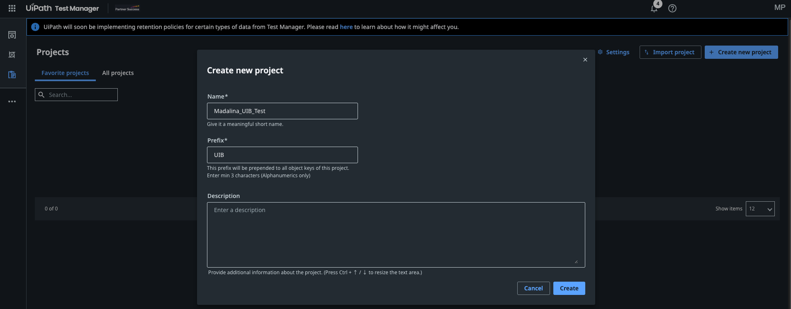
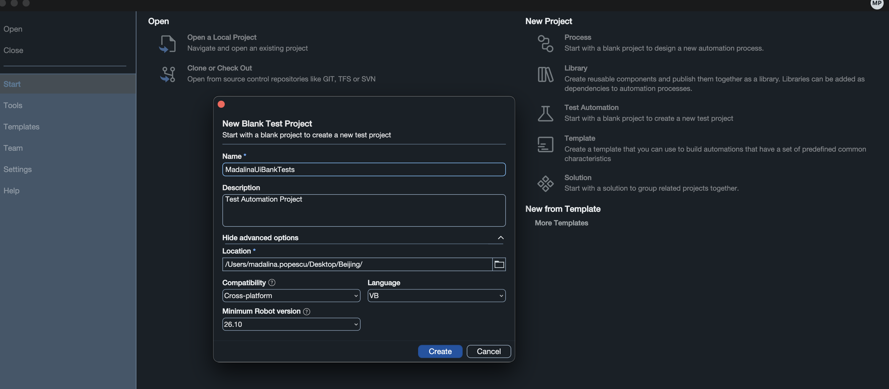

Hands-on · Testing Setup
🧭 Agentic Testing: Hands-On Session¶
Take the UiBank design document to requirements, test cases, automations, test sets, and executions in UiPath Test Cloud, with Autopilot for Testers, Autopilot for Developers, and a coding agent.
👋 Overview¶
A QA team at a bank gets a new application description every sprint. Someone turns it into requirements. Someone types the test cases into Test Manager by hand. Someone else rebuilds each one in Studio, capturing every field and button. A fourth person groups them into test sets, runs them, and copies the results into a status email. That's four handoffs and hours of clicking, and the document, the requirements, the test cases, and the automations drift apart within a month.
In this session you'll do each of those jobs with AI agents, and see where a human still makes the call. Autopilot works inside the product: in Studio it creates requirements, test cases, test sets, and expressions, and in Test Manager it evaluates requirements, generates test cases, and runs a test case autonomously. A coding agent such as Codex or Claude Code works from your terminal and does the same automation work through the uip CLI and the UiPath skills. You'll build one test case by hand first, so you can judge what the agents build for you.
Training Environment
Log in at https://cloud.uipath.com/tpenlabs using tenant AgenticTestingWorkshop. The Autopilot features in this session are on UiPath Automation Cloud, so make sure Studio, the uip CLI, and your browser all point there.
🗺️ What You'll Do¶
The hands-on part follows the Agenda:
Create a new project in Test Manager, a new test automation project in Studio, and connect them
👤 You
Turn the UiBank design document into requirements, discuss them, evaluate their quality, improve them, and evaluate again
👤 Autopilot in Studio Desktop, Autopilot in Test Manager, you
Generate test cases from a requirement, automate the Login test case by hand, generate the next one, see a test case run autonomously, and add a few more
👤 Autopilot in Test Manager, you, Autopilot in Studio Desktop or a coding agent
Create test sets from your test cases, run them, and look into their executions
👤 Autopilot in Studio Desktop, you
🏦 The scenario¶
How the work moves through the session:
UiBank design document (.docx)
│
▼
Setup New {YourName}_UIB_Test project in Test Manager ──▶ new test automation project in Studio ──▶ connected
│
▼
Requirements Autopilot in Studio Desktop ──▶ Requirements ──▶ Autopilot in Test Manager evaluates ──▶ you improve ──▶ re-evaluate
│
▼
Test Cases Autopilot in Test Manager ──▶ Test cases (manual steps)
├─ Login: you automate it by hand in Studio
├─ Next one: Autopilot in Studio Desktop, or your coding agent, automates it
├─ Run Autonomously: Autopilot runs a manual test case itself
└─ A few more
│
▼
Executions Executions tab ──▶ every run so far
│
▼
Test Sets Autopilot in Studio Desktop ──▶ Test sets ──▶ publish ──▶ run ──▶ executions
📄 The design document¶
Everything in this session comes from one design document for the UiBank web application: E2E UiBank Online Banking. Download E2E UiBank Online Banking.docx and save it in your workshop folder.
Download the design document (.docx)
Application
UiBank Web Application v2.0.0 (Accounts / Transfers / Loans / Profile)
Environment
https://uibank.uipath.com in Google Chrome. Fallback: https://purple-dune-0af054403.6.azurestaticapps.net
What it describes
Log in, open a Checking and a Savings account, transfer funds between them, apply for a loan, retrieve it by Loan ID, and verify the user profile
The document describes the customer journey in eight steps. You won't test it as one long end-to-end run. Each step becomes a requirement and its own test cases, so a failure points straight at the feature that broke, and one broken screen doesn't hide the results of the others.
0
Login and Initial Account State
/login, /accounts
✅ Login succeeds; initial account state captured
1
Checking Account Creation
/accounts/account-apply
✅ Checking account listed in the summary
2
Savings Account Creation
/accounts/account-apply
✅ Savings account listed in the summary
3
Funds Transfer Between Accounts
/accounts/transfer-money
✅ Both balances change by exactly the transferred amount
4
Loan Application Submission
/loans/apply
✅ Loan ID generated
5
Loan Status Lookup
/loans/lookup
✅ Amount and term match what was submitted
6
User Profile Identity Verification
/userprofile
✅ Username and email match the logged-in user
7
Logout and Evidence Collection
/
✅ Session closed; screenshots attached to the report
🔢 The test data¶
These are the variables the design document defines. Use them in your prompts and your automations, so the requirements, the test cases, and the results all describe the same thing.
| Variable | What it holds | Value / rule |
|---|---|---|
var_Username, var_Password |
UiBank login | From the Orchestrator credential asset {YourName}_UiBankCredential. Never hard-coded. |
var_CheckingNickname |
New Checking account | AutoChecking_<yyyyMMddHHmmss>, unique per run |
var_SavingsNickname |
New Savings account | AutoSavings_<yyyyMMddHHmmss>, unique per run |
var_TransferAmount |
Amount to transfer | 10, never more than the source balance |
var_LoanEmail |
Loan requester email | The email you registered on UiBank |
var_LoanAmount |
Loan amount | 5000 |
var_LoanTerm |
Loan term in years | 3 (allowed: 1, 3, 5, 10) |
var_YearlyIncome |
Yearly income before taxes | 60000 |
var_Age |
Requester's age | 35 |
var_LoanID |
Loan ID returned by UiBank | Extracted after a loan is submitted |
Three things every test case must handle
- It runs on its own. Test cases run in any order, on any robot. In the document, the transfer uses the accounts from Steps 1 and 2, and the lookup uses the Loan ID from Step 4. As test cases, the transfer opens its own two accounts and the lookup submits its own loan, at the start.
- No accounts yet. A fresh UiBank user sees "No accounts at this time, apply for a new account today!" instead of a table. That's a valid starting state, not a failure.
- Unknown rules. UiBank is a demo app. Balances and loan decision rules aren't documented, and data can be reset. Check the loan outcome rather than assuming approval.
📋 What's Test Manager?¶
⚙️ Setup¶
- Test Manager open in your browser on the AgenticTestingWorkshop tenant.
🆕 Create a new project in Test Manager¶
Requirements, test cases, test sets, and executions all live in a Test Manager project. Create yours first: everything Autopilot generates in the next parts goes into it.
- Go to https://cloud.uipath.com/tpenlabs, select the AgenticTestingWorkshop tenant, and open Test Manager.
- On the Projects page, select Create new project.
-
In the Create new project dialog, fill in:
- Name:
{YourName}_UIB_Test - Prefix:
{YourPrefix}, a unique code of 3 to 5 letters and numbers: your initials plus a digit, for exampleVC1. Everyone works in the same tenant, and each prefix can be used only once in it. You can't change it later. - Description: optional, for example UiBank online banking tests.

The Create new project dialog. The screenshot uses the prefix UIB: use your own.What the prefix is for
Every object in the project gets a key that starts with the prefix: with the prefix
VC1, the first requirement becomesVC1:1, the nextVC1:2, and so on, across requirements, test cases, and test sets. Short and recognizable beats descriptive. - Name:
-
Select Create, then open the project. It's empty for now.
-
Set the project's default Orchestrator folder. Test sets need it to run automated test cases later.
- In the project's left menu, select Project Settings, then the Automation tab.
- In Default Folder, select
AgenticTesting. - Select Save.
 Project Settings > Automation, with
Project Settings > Automation, with AgenticTestingas the default folder.
Why your name in the project name
Everyone in the session works in the same tenant. Your name keeps your project easy to find in the Projects list, and keeps your requirements, test cases, and results apart from everyone else's.
🛠️ Create a new test automation project in UiPath Studio Desktop¶
- Open Studio. On the Start screen, under New Project, select Test Automation.
-
In the New Blank Test Project dialog, fill in:
- Name:
{YourName}UiBankTests - Description: optional, for example Test Automation Project

- Name:
-
Select Create.
- Studio opens the new project. In the Project panel, expand Dependencies and check that the testing packages are there, such as
UiPath.Testing.ActivitiesandUiPath.UIAutomation.Activities.
Why a test automation project
A test automation project is built for test cases: it has the testing activities, the Given / When / Then template, and the Test Explorer panel. Each test case in it can be linked to a test case in Test Manager, and its results go back to Test Manager when it runs there.
🔗 Connect it to Test Manager¶
The project needs to know which Test Manager project its requirements, test cases, and results belong to. Pick one way:
- In the Explorer panel, right-click your project name and select Project Settings.
- Select Test Manager Configuration.
- Under Test Manager Settings, enter the Test Manager URL
https://cloud.uipath.com/tpenlabs/AgenticTestingWorkshop/testmanager_, then select Connect. The status changes to Connected. - In Default Project, type your prefix and select {YourName}_UIB_Test ({YourPrefix}).
- Select OK.
Close the project in Studio, start your coding agent in your workshop folder, and give it this prompt:
Connect the Studio project in ./{YourName}UiBankTests to Test Manager at
https://cloud.uipath.com/tpenlabs/AgenticTestingWorkshop/testmanager_ with my {YourName}_UIB_Test project
(prefix {YourPrefix}) as the default project, and show me uip rpa tm status.
Then reopen the project in Studio. The connection is stored in the project's .tmh/config.json, so Studio, Autopilot, and the CLI all use the same one.
✅ Check you're ready¶
- Studio shows {YourName}_UIB_Test as the default Test Manager project.
- The Autopilot panel opens in Studio.
- Test Manager is open in your browser, on the {YourName}_UIB_Test project.
Your workshop folder now looks like this:
workshop/
├── {YourName}UiBankTests/ ← Studio test automation project, connected to Test Manager
└── E2E UiBank Online Banking.docx ← the design document
Setup done
A new {YourName}_UIB_Test project in Test Manager, and a new test automation project in Studio connected to it. Autopilot can now write requirements straight into it.
🚀 Next Steps¶
Requirements
Eight requirements generated by Autopilot in Studio Desktop from one design document, evaluated and improved with Autopilot in Test Manager
Test Cases
Test cases generated by Autopilot in Test Manager; Login automated by hand; more automated by Autopilot in Studio Desktop or a coding agent; one autonomous run
Executions
Every run recorded with results and evidence, traceable to its requirement
Test Sets
A smoke set and a regression set created by Autopilot and executed on a robot
Ongoing
- Bring your questions. No question is too basic, especially this early.
- Tell us when something doesn't work. Run
uip feedback sendthe moment a skill guesses wrong, a command fails, or a step takes three tries.
⚠️ Gotchas you'll hit¶
Things every QA team learns in the first month.
Trust but verify
Autopilot and coding agents are fast and confident. Read the generated requirements, test cases, and assertions: a test that checks nothing passes every time.
Pick the right agent
Autopilot for what's in front of you in the product. A coding agent for work that spans files, projects, and products.
Independent test cases
Every test sets up its own data in Given. Run them in a different order once to prove it.
Good manual steps pay twice
One action and one expected result per step helps Autopilot generate the automation, and run the test case autonomously.
Never hand-write selectors
Capture targets from the live app into the Object Repository. A plausible-looking selector that matches nothing costs more than the capture.
One environment
Studio, the CLI, and the browser on the same tenant. Most "Autopilot can't find my project" problems are a Studio signed in somewhere else.